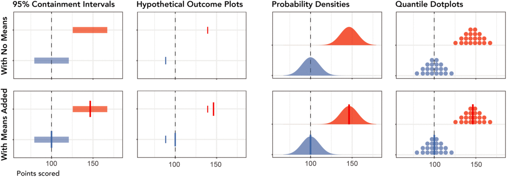
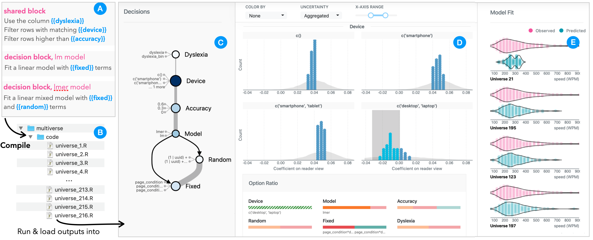
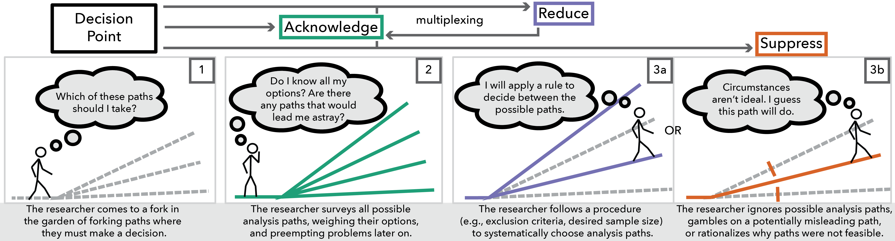
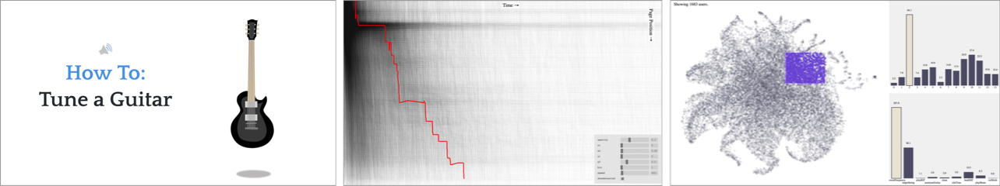
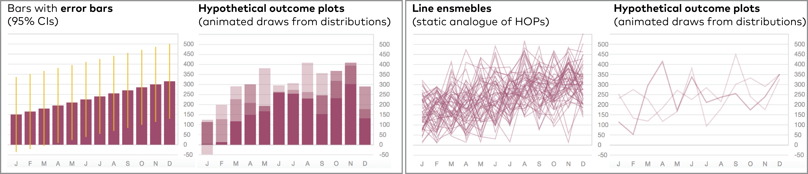
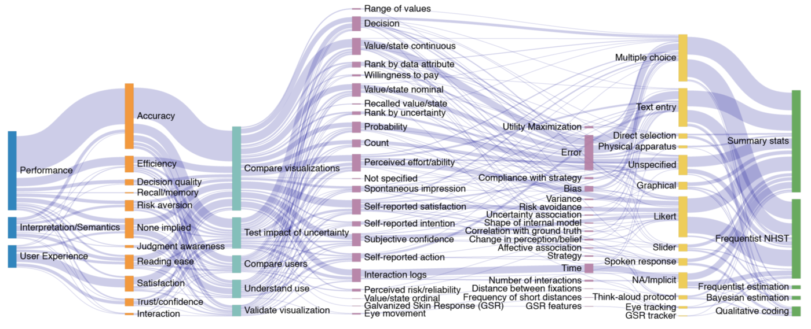

Research
My research combines graphical perception experiments and systems design to investigate uncertainty
communication. I am interested in how data visualizations are used to communicate probability
and uncertainty information to non-expert audiences, especially when people rely on that
information to make incentivised decisions. I am also interested in how such visualizations are
incorportated into interactive systems for data analysis and decision support. As a case study on
uncertainty visualization in analysis systems, I am designing software with Stottler Henke and Associates
to help scientists conduct meta-analysis and communicate evidence-based recommendations to
decision-making officials and other stakeholders.
Here are some representative publications (see my CV for a
full list).
Visual Reasoning Strategies for Effect Size Judgments and Decisions
VIS 2020
Alex Kale, Matthew Kay, and Jessica Hullman

We present a mixed design experiment on Mechanical Turk which tests eight uncertainty visualization designs: intervals,
hypothetical outcome plots, densities, and quantile dotplots, each with and without means added. Participants estimate the
effect size of an intervention and make an incentivized decision whether or not to pay for that intervention. Our results
suggest that many users rely on the sub-optimal strategy of judging the distance between distributions while ignoring uncertainty.
Visualization designs that support the least biased estimation do not support the best decisions, suggesting that a chart user’s
sense of the signal in a chart may vary for different tasks.
Boba: Authoring and Visualizing Multiverse Analyses
VIS 2020
Yang Liu, Alex Kale, Tim Althoff, and Jeffrey Heer

Boba is an integrated domain-specific language (DSL) and visual analysis system for authoring and
visually exploring multiverse analyses. The Boba DSL enables analysts to specify decision spaces in
data analysis, supporting multiple scripting languages. The Boba Visualizer provides linked views of the
decision space and model results to enable rapid, systematic assessment of robustness of results to decision
alternatives, sampling uncertainty, and model fit.
Adaptation and Learning Priors in Visual Inference
Position Paper
VIS 2019
Alex Kale and Jessica Hullman
We review the vision science literature on adaption, a set of processes by which the visual
system adjusts incoming sensory signals based on previous visual experience. We present an
explanation of visual adaptation that is tailored to the visualization community and consider
the implications of adaptation when designing for inferences from visualized data.
Decision-Making Under Uncertainty in Research
Synthesis: Designing for the
Garden of Forking Paths
CHI 2019
Alex Kale, Matthew Kay, and Jessica Hullman

We study decision-making strategies used by researchers conducting systematic review and
meta-analysis. Integrating prior work from judgment & decision-making, reproducable statistics,
and uncertainty visualization, we point to challenges and opportunities for the design of
interactive systemts to support research synthesis.
Capture & Analysis of Active Reading Behaviors for Interactive Articles on the
Web
EuroVis 2019
Matt Conlen, Alex Kale, and Jeffrey Heer

Interactive articles are increasingly popular online, yet their effectiveness
at engaging readers has not been widely studied with real-world audiences. We developed tools
for instrumentation and analysis to make it easier for researchers and publishers to understand
how readers are reacting to this new media.
Hypothetical Outcome Plots Help Untrained Observers Judge Trends in Ambiguous
Data
InfoVis 2018
Alex Kale, Francis Nguyen, Matthew Kay and Jessica Hullman

We present two experiments evaluating four different uncertainty visualizations: bar graphs
with error bars, bar hypothetical outcome plots (HOPs), static
line ensembles, and line HOPs. Untrained users are able to distinguish trends at
lower signal-to-noise ratios when shown HOPs that express sampling error through animated
samples.
In Pursuit of Error: A Survey of Uncertainty Visualization
Evaluation
InfoVis 2018
Jessica Hullman, Xiaoli Qiao, Michael Correll, Alex Kale, and Matthew Kay

We present a review and analysis of evaluation methods for uncertainty visualizations,
resulting in a collection of 372 evaluation paths observed across a sample of 86 publications.